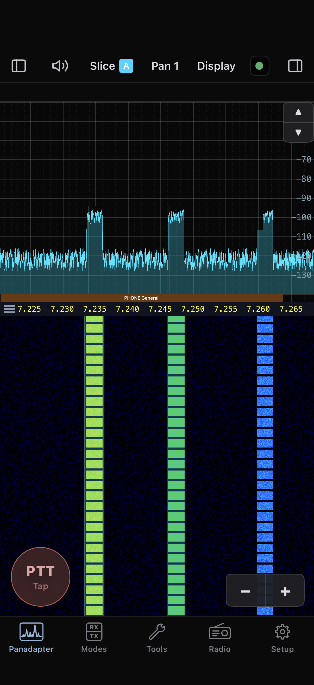
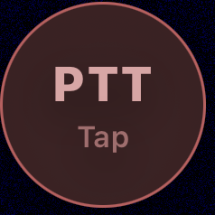
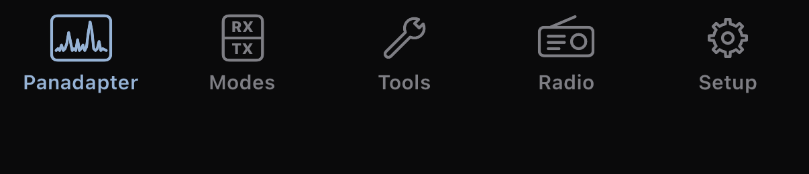
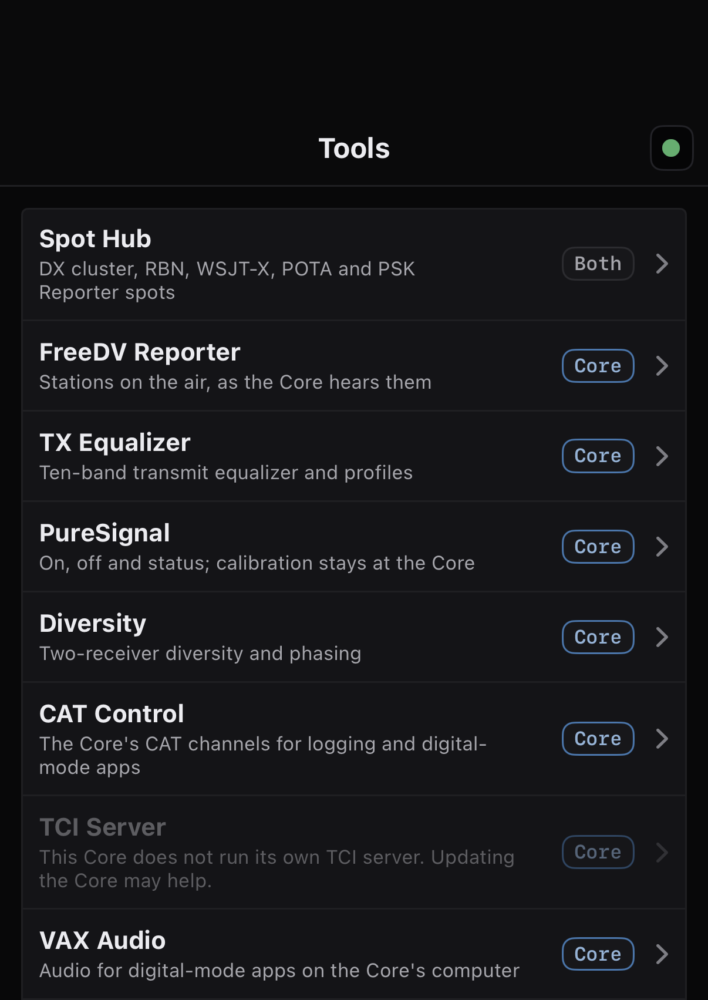
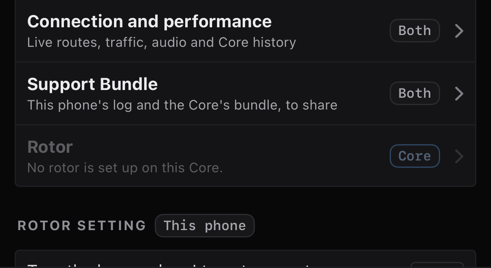
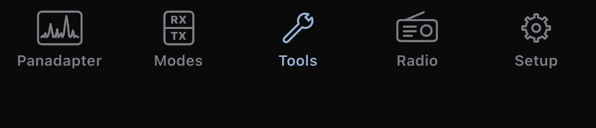
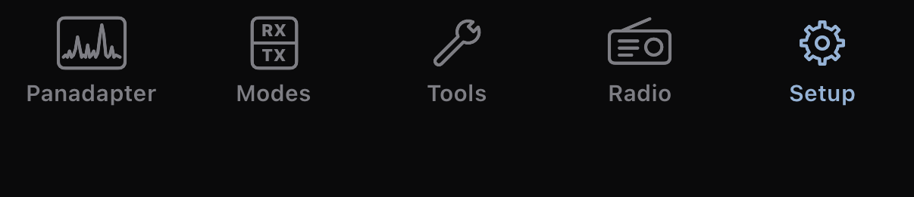

Connected · Control direct↓1.4 ↑0.2

7.236.400
Ragchew with Bob
0:00 / 12:00 · your speaker
PAST14:12:05

−
+
Digital Spectrum Recorder: drawing 13:40

Save 14:28:10 to 14:30:50 UTC
2 min 40 s. Drag the yellow handles on the time strip to change it.
Go to a time (UTC)
Kept from 10:58 to now.

Voice Keyer
Eight recorded messages to send on the air
Core›Recordings
Saved stretches and quick recordings on the Core
Core›

Core
Recordings
None selected
Core
Digital Spectrum Recorder
These settings live on the Core, so every phone and computer sees the same ones.
This Core needs a proper storage device for the recorder. It only has an SD card, which is too slow for this and wears out under constant writing. Connect a USB SSD or NVMe drive to the Core, then pick it below. A thumb drive is not enough.
Not connected to a Core. Connect to change the recorder. Everything here stays visible.
Recording
Keep recording the pan
Recording. Reaches back 3 h 34 min.
What it records
Receiver 1, the whole 192 kHz it hears. About 2.8 GB an hour.
Where it is kept
Disk
USB SSD (Samsung T7) · 812 GB free
Size
10 GB
Holds about 3 h 34 min at this pan width.
In use
KeptWriting nowErased next
Full. The oldest part is erased as each new second comes in.
It is always erasing. Whatever size you pick, the recorder keeps only the newest stretch and erases the oldest as it goes. To keep something, save it from the time strip.
Saved stretches
Recordings
Saved stretches are never erased by the recorder.
Recording settings
The Record button, file type and names.
Save sound only as

Core
Recordings
Settings for the Record button beside the slice flag and for sound you save. They live on the Core, so every phone and computer sees the same ones.
Not connected to a Core. Connect to change these. Everything here stays visible.
What the Record button keeps
What you hear on the slice
Always kept.
Your own voice when you transmit
So the recording has both sides of the contact.
The two sides
One after the other, as you heard them.
Starting and stopping
Start by itself when I transmit
Off. Recording starts only when you tap Record.
Stop by itself when it goes quiet
After nothing is heard and you have not transmitted.
Quiet for
2 min
Files
Save as
Small, plays anywhere. About 29 MB an hour.
Names
When and where it was made, with the other station's call when the log knows it:
2026-11-15 1432Z 7.236.400 LSB K4ABC.mp3
The same choice is used for Sound only saves from the recorder. Rename any recording in Tools, Recordings.
Where they are kept
Disk
USB SSD (Samsung T7) · 812 GB free
Recordings
12 on the Core, 1.4 GB.
Recordings are never erased by themselves. Only you delete them.
Playing back
Play comes out of this phone's speaker or headphones. Press PTT while it plays and whatever is playing goes out on the air instead of your mic.
Core
Voice Keyer
Eight messages kept on the Core. Tap one to send it on the air.
RECORD Core
Record into
This phone's mic
MESSAGES Core
Import WAV…
Fills the first empty message, M5
REPEAT Core
Repeat the message
Calls CQ until someone answers
Wait between
5 s
Sending keys the radio and goes back to receive at the end. Stop, PTT or tapping the message again ends it early. Your voice is kept as it comes from the mic, and the transmit processing is applied each time it is sent.
On the air: M2
0:01 / 0:06
Voice keyer
Transmit is with the Shack Mac. Take it to send a message from this phone.
Repeat the messageOff